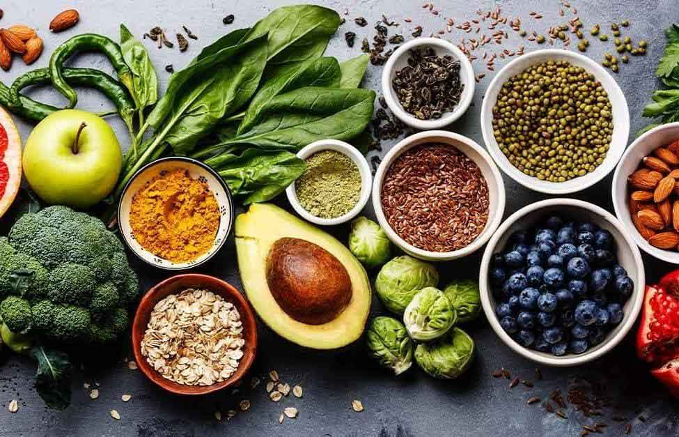
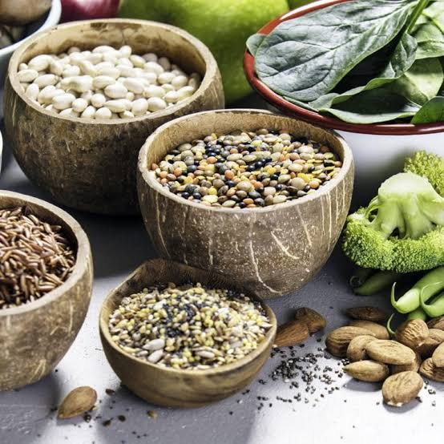
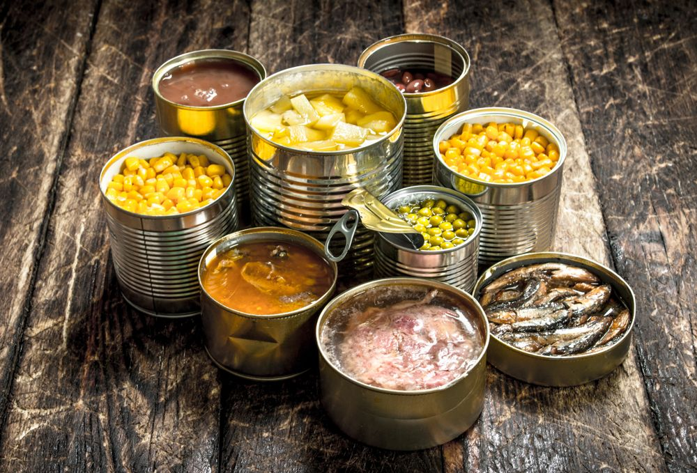
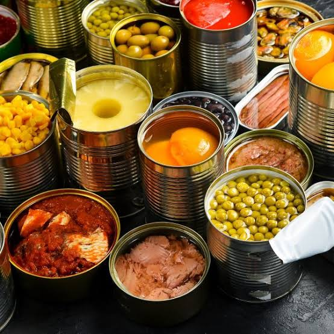

naturais
O surgimento dos alimentos enlatados, impulsionado pelas necessidades de abastecimento militar no século XIX, revolucionou a preservação alimentícia ao introduzir o método de esterilização térmica em recipientes hermeticamente selados. Esse processo elimina microrganismos nocivos e impede a entrada de ar, permitindo que itens como legumes, peixes e carnes mantenham sua integridade e segurança por anos sem a necessidade de refrigeração. Como resultado, os enlatados tornaram-se pilares essenciais na logística de abastecimento global, facilitando o armazenamento doméstico, reduzindo o desperdício pós-colheita e garantindo nutrição acessível em qualquer lugar.
Em termos nutricionais e de consumo, o enlatamento preserva a maioria dos macronutrientes, minerais e fibras, embora o calor do processamento possa reduzir parcialmente vitaminas termossensíveis, como a vitamina C. Para uma escolha mais saudável, recomenda-se verificar os rótulos e dar preferência a opções conservadas em água em vez de óleos, com teor reduzido de sódio e revestimentos internos livres de Bisfenol A (BPA). Além disso, cuidados básicos como lavar a lata antes de abrir e evitar recipientes estufados, amassados ou enferrujados garantem a total segurança microbiológica no consumo diário.


enlatados
O surgimento dos alimentos enlatados, impulsionado pelas necessidades de abastecimento militar no século XIX, revolucionou a preservação alimentícia ao introduzir o método de esterilização térmica em recipientes hermeticamente selados. Esse processo elimina microrganismos nocivos e impede a entrada de ar, permitindo que itens como legumes, peixes e carnes mantenham sua integridade e segurança por anos sem a necessidade de refrigeração. Como resultado, os enlatados tornaram-se pilares essenciais na logística de abastecimento global, facilitando o armazenamento doméstico, reduzindo o desperdício pós-colheita e garantindo nutrição acessível em qualquer lugar.
Em termos nutricionais e de consumo, o enlatamento preserva a maioria dos macronutrientes, minerais e fibras, embora o calor do processamento possa reduzir parcialmente vitaminas termossensíveis, como a vitamina C. Para uma escolha mais saudável, recomenda-se verificar os rótulos e dar preferência a opções conservadas em água em vez de óleos, com teor reduzido de sódio e revestimentos internos livres de Bisfenol A (BPA). Além disso, cuidados básicos como lavar a lata antes de abrir e evitar recipientes estufados, amassados ou enferrujados garantem a total segurança microbiológica no consumo diário.


Contato
Preencha os campos abaixo para entrar em contato.